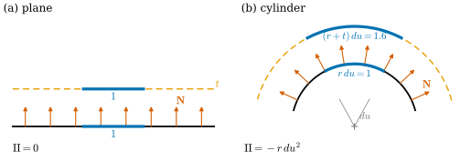
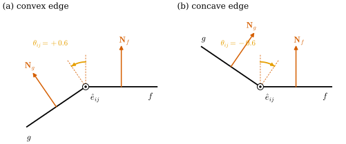
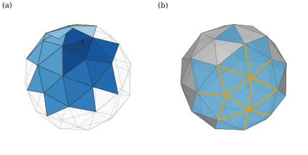

39.5 Fundamental Forms and the Fundamental Theorem of Surfaces
Goals
- first fundamental form과 second fundamental form을 \(d\mathbf{x}\)와 \(d\mathbf{N}\)으로 쓰고, II가 normal 방향 offset에서 I이 변하는 빠르기임을 증명할 수 있다.
- fundamental theorem of surfaces(Bonnet)를 정확히 진술하고, plane curve의 fundamental theorem과 closing condition에 비추어 설명할 수 있다.
- simplicial surface의 interior edge에서 bending angle을 정의하고 그 부호를 판정할 수 있다.
- edge length와 bending angle이 discrete immersion을 proper rigid motion을 제외하고 정한다는 fundamental theorem of discrete surfaces를 증명하고 구현하며, vertex마다의 compatibility 조건을 확인할 수 있다.
Prerequisites
- Section 39.1–39.2: (39.1.2), Proposition 39.1.5, Exercise 39.1.3(parallel surface), normal curvature Proposition 39.2.5.
- Chapter 38: induced metric Definition 38.2.1, discrete immersion Definition 38.4.7, Corollary 38.4.10, discrete Gauss map Definition 38.5.1, hinge Example 38.6.4, dimpled icosahedron Non-example 38.6.15.
- Chapter 37: fundamental theorem of discrete plane curves와 space curves Theorem 37.4.6, Theorem 37.5.8, closing condition Proposition 37.1.7.
- Chapter 33: orientation과 consistent orientation(Definition 33.4.14), edge-connectedness Lemma 33.4.15. Track 1: bending angle Definition 31.2.5.
Motivation
Chapter 38은 질문 하나를 남겼다. mesh의 edge length만으로는 모양이 정해지지 않는다. hinge는 길이를 지킨 채 접히고(Example 38.6.4), dimpled icosahedron은 icosahedron과 모든 edge length가 같은데 모양이 다르다(Non-example 38.6.15). 무엇을 더해야 모양이 정해지는가? smooth surface에서도 같은 일이 있다. 평면과 cylinder는 국소적으로 같은 metric을 갖는다.
곡선에서는 답을 이미 보았다. plane curve는 길이와 꺾이는 각으로, space curve는 거기에 비틀림까지 주면 rigid motion을 제외하고 정해졌다(Chapter 37). 이 절은 surface의 판을 다룬다. metric이 “길이”의 자리라면, “꺾이는 정도”의 자리는 Section 39.1–39.4의 \(W\), 곧 second fundamental form이다. mesh에서는 edge length와 이웃한 두 face가 꺾이는 각, 곧 bending angle이 그 둘이다.
The First and Second Fundamental Forms
immersion \(\mathbf{x}\colon U \to \R^3\)과 Gauss map \(\mathbf{N}\)에 대하여, 점마다 \(\R^2\) 위의 세 symmetric bilinear form을 다음과 같이 둔다.
I은 first fundamental form(제1기본형식), 곧 induced metric이다(Definition 38.2.1, Definition 7.1.1). II는 second fundamental form(제2기본형식)이다(Definition 8.2.1). 둘째 등호는 (39.1.2)이고, II가 symmetric이라는 것은 Proposition 39.1.5다. 행렬로는 I이 \(\mathsf{g} = \begin{pmatrix} E & F \\ F & G \end{pmatrix}\), II가 \(\mathsf{h} = \begin{pmatrix} L & M \\ M & N \end{pmatrix}\)이다. 셋째 III을 third fundamental form(제3기본형식)이라 부르기도 한다. 새로운 대상은 하나도 없다. 노트도 강조하듯 I과 II는 \(\mathbf{x}\)와 \(\mathbf{N}\)이라는 두 map의 differential을 다시 적은 것이다 [Cr §3.4.2]. 예를 들어 normal curvature는 \(\kappa_n(X) = \mathrm{II}(X, X)/\mathrm{I}(X, X)\)이다(Proposition 39.2.5).
II의 기하적인 뜻 하나는 이미 보았다. 방향마다의 normal curvature다. 다른 뜻은 surface를 normal 방향으로 밀 때 나타난다.
Proposition 39.5.1 (II is the rate of change of I under normal offsets). immersion \(\mathbf{x}\)와 Gauss map \(\mathbf{N}\)에 대하여 \(\mathbf{x}_t = \mathbf{x} + t\mathbf{N}\)이라 하고, \(\mathbf{x}_t\)의 first fundamental form을 \(\mathrm{I}_t(X, Y) = \inner{d\mathbf{x}_t(X)}{d\mathbf{x}_t(Y)}\)로 두자. 그러면 모든 \(t\)에서
이다.
Proof. \(d\mathbf{x}_t = d\mathbf{x} + t\,d\mathbf{N}\)이므로 bilinearity로
\[ \begin{aligned} \mathrm{I}_t(X, Y) &= \inner{d\mathbf{x}(X)}{d\mathbf{x}(Y)} \\ &\quad + t\big(\inner{d\mathbf{x}(X)}{d\mathbf{N}(Y)} + \inner{d\mathbf{N}(X)}{d\mathbf{x}(Y)}\big) \\ &\quad + t^2\inner{d\mathbf{N}(X)}{d\mathbf{N}(Y)} \end{aligned} \]
이다. 가운데 괄호의 둘째 항은 \(-\mathrm{II}(X, Y)\)이고, 첫째 항은 Proposition 39.1.5에 의해 \(\inner{d\mathbf{N}(Y)}{d\mathbf{x}(X)} = -\mathrm{II}(Y, X) = -\mathrm{II}(X, Y)\)이다. 그러므로 괄호는 \(-2\,\mathrm{II}(X, Y)\)이고, 셋째 항이 \(\mathrm{III}(X, Y)\)이다. \(t\)에 대한 이차식이므로 \(t = 0\)에서의 미분은 일차항의 coefficient다.
식에 \(\mathbf{x}_t\)가 immersion이라는 조건은 필요 없다. \(\mathrm{I}_t\)가 degenerate가 되는 \(t\)가 Exercise 39.1.3의 focal point다. plane curve에서 offset의 속도가 \((1 - \varepsilon\kappa_s)\mathbf{t}\)였던 것(Proposition 32.2.4의 증명)이 이 식의 1차원 판이다. 길이의 제곱으로 쓰면 \((1 - \varepsilon\kappa_s)^2 = 1 - 2\varepsilon\kappa_s + \varepsilon^2\kappa_s^2\)이다. 넓이 요소의 변화는 \(\det(I_2 - t\mathsf{W}) = 1 - 2tH + t^2K\)배이고, 그것을 적분한 Steiner formula는 Proposition 31.2.6(Track 1)과 Section 40.4 [확인 필요: Chapter 40 미작성 — 참조 번호 확정 필요]에서 다룬다.
Figure 39.5.1은 두 surface를 ruling에 수직으로 자른 단면이다. 왼쪽 (a)의 평면은 \(\mathrm{II} = 0\)이다. 주홍 normal 방향으로 \(t = 0.6\)만큼 민 주황 점선 위에서 파란 조각의 길이가 \(1\) 그대로다. 오른쪽 (b)는 반지름 \(1\)인 cylinder다. 같은 parameter 폭 \(du = 1\)의 조각이 밀기 전에는 길이 \(1\), 바깥으로 \(0.6\) 민 뒤에는 \(1.6\)이다. 곧 \(\mathrm{I}_t(\partial_u, \partial_u) = 1.6^2 = 1 - 2(0.6)(-1) + 0.6^2\)이다. 바깥쪽 normal이라 \(\mathrm{II}(\partial_u, \partial_u) = L = -r = -1\)이고, 그래서 밀면 길어진다.

Example 39.5.2 (same I, different II: the plane and the cylinder). \(\mathbf{y}(u, v) = (ru, v, 0)\)(평면)과 cylinder \(\mathbf{x}(u, v) = (r\cos u, r\sin u, v)\)(\(\mathbf{N}\) 바깥쪽)을 보자. \(\mathbf{y}_u = (r, 0, 0)\), \(\mathbf{y}_v = (0, 1, 0)\)이므로 \(\mathbf{N}_{\mathbf{y}} = \mathbf{y}_u\times\mathbf{y}_v/\abs{\cdots} = (0, 0, 1)\)이고, 둘 다
\[ \mathrm{I} = r^2\,du^2 + dv^2 \]
이다(Example 38.2.3). 그러나 평면은 \(\mathbf{N}\)이 상수라 \(\mathrm{II} = 0\)이고, cylinder는 \(\mathrm{II} = L\,du^2 = -r\,du^2\)이다(Example 39.1.3(b)의 \(\mathsf{W} = \diag(-1/r, 0)\)에 \(\mathsf{g}\)를 곱한다). 아래 Proposition 39.5.3에 의해 rigid motion은 II를 보존하므로 둘을 잇는 rigid motion은 없다. 곧 I만으로는 surface가 정해지지 않는다.
Verification: verify/v-39-5-fundamental-theorem.py
The Fundamental Theorem of Surfaces
Proposition 39.5.3 (rigid motions preserve I and II). \(\rho(p) = Ap + c\)(\(A\)는 orthogonal matrix)이고 \(\mathbf{y} = \rho\circ\mathbf{x}\)라 하자. 그러면 \(\mathrm{I}_{\mathbf{y}} = \mathrm{I}_{\mathbf{x}}\)이고, \(\mathrm{II}_{\mathbf{y}} = \det A\cdot\mathrm{II}_{\mathbf{x}}\)이다(각자의 Gauss map으로 계산). 특히 \(\det A = 1\)이면 II도 같다.
Proof. \(d\mathbf{y} = A\,d\mathbf{x}\)이고 \(A\)는 inner product를 보존하므로 \(\mathrm{I}_{\mathbf{y}} = \mathrm{I}_{\mathbf{x}}\)이다. orthogonal matrix \(A\)와 vector \(v, w, z\)에 대하여 \(\inner{Av\times Aw}{Az} = \det[Av\ Aw\ Az]\) \(= \det A\,\inner{v\times w}{z}\) \(= \inner{(\det A)A(v\times w)}{Az}\)이므로 \(Av\times Aw = (\det A)A(v\times w)\)이다. 그래서 \(\mathbf{y}_u\times\mathbf{y}_v = (\det A)A(\mathbf{x}_u\times\mathbf{x}_v)\), 곧 \(\mathbf{N}_{\mathbf{y}} = (\det A)A\mathbf{N}_{\mathbf{x}}\)이다. 그러면 \(\mathrm{II}_{\mathbf{y}}(X, Y) = -\inner{(\det A)A\,d\mathbf{N}_{\mathbf{x}}(X)}{A\,d\mathbf{x}(Y)}\) \(= (\det A)\,\mathrm{II}_{\mathbf{x}}(X, Y)\)이다.
거꾸로 I과 II가 같으면 rigid motion으로 옮길 수 있는가? 그리고 아무 I과 II를 주어도 그런 surface가 있는가?
Theorem 39.5.4 (fundamental theorem of surfaces, Bonnet). (a) \(U \subseteq \R^2\)가 connected open set이고 \(\mathbf{x}, \mathbf{y}\colon U \to \R^3\)이 immersion이며 각자의 Gauss map으로 계산한 \(\mathrm{I}\)과 \(\mathrm{II}\)가 모든 점에서 같으면, \(\det A = 1\)인 orthogonal matrix \(A\)와 \(c \in \R^3\)이 있어 \(\mathbf{y} = A\mathbf{x} + c\)이다. (b) \(V \subseteq \R^2\)의 open set에서 smooth function \(E, F, G, L, M, N\)이 \(E \gt 0\), \(EG - F^2 \gt 0\)이고 Gauss equation과 Codazzi–Mainardi equations(Section 9.2 [확인 필요: Chapter 9 미작성 — 참조 번호 확정 필요])를 만족하면, 각 \(q \in V\)의 근방 \(U\)에서 first fundamental form과 second fundamental form의 coefficient가 이 함수들인 immersion이 있다 [dC §4-3].
이 정리는 진술만 한다. 증명은 frame \((\mathbf{x}_u, \mathbf{x}_v, \mathbf{N})\)이 만족하는 linear PDE system을 적분하는 것이고, (b)의 조건은 그 system이 적분 가능할 조건이다 [dC §4-3].
이 정리를 plane curve의 경우와 비교해 보자 [CMU-DDG L15] slide 34. plane curve는 signed curvature가 rigid motion을 제외하고 곡선을 정하고, 아무 함수 \(\kappa_s\)나 주어도 국소적으로는 그런 곡선이 있다(Theorem 4.4.10). 조건은 곡선을 닫을 때만 생긴다. \(\int\kappa_s \in 2\pi\Z\)와 \(\int\mathbf{t} = 0\)이다(Proposition 37.1.7). surface에서는 국소적으로도 조건이 있다. 그중 하나가 Gauss equation, 곧 “\(\det\mathsf{h}/\det\mathsf{g}\)가 \(E, F, G\)만으로 계산한 \(K\)와 같아야 한다”는 Theorema Egregium이다(Section 39.3). 길이 데이터(I)와 꺾임 데이터(II)가 서로 맞물려야 한다. 아래의 mesh 판에서는 이 조건이 vertex마다의 조건으로 정확히 나타난다.
Bending Angles
mesh에서 I에 해당하는 것은 edge length다(Section 38.6에서 edge length가 \(\star\)와 \(L\)을 정했다). II에 해당하는 것은 normal의 변화이고, discrete Gauss map은 face마다 상수이므로 그 변화는 edge에서 normal이 도는 각뿐이다(Section 39.1의 Smooth vs. Discrete 상자). 그 각에 부호를 붙인다.
Definition 39.5.5 (bending angle). \(\mathcal{K}\)가 orientation을 갖는 simplicial surface이고 \(\mathbf{x}\)가 그 discrete immersion(Definition 38.4.7)이라 하자. interior edge \(\{i, j\}\)를 공유하는 두 face 가운데 orientation이 \(i \to j\)로 지나는 것을 \(f = (i, j, k)\), 다른 것(\(j \to i\)로 지나는 것)을 \(g = (j, i, l)\)이라 하고, \(\hat e_{ij} = (\mathbf{x}_j - \mathbf{x}_i)/\ell_{ij}\)라 하자. face normal \(\mathbf{N}_f, \mathbf{N}_g\)(Definition 38.5.1)에 대하여
를 edge \(ij\)의 bending angle(굽힘각)이라 한다. 곧 \(\mathbf{N}_g = R(\hat e_{ij}, \theta_{ij})\,\mathbf{N}_f\)이다. 여기서 \(R(\mathbf{a}, \theta)\)는 unit vector \(\mathbf{a}\) 둘레로 오른손 규칙에 따라 각 \(\theta\)만큼 도는 회전이다.
정의가 잘 되었는지 확인하자. 두 face가 edge를 공유하므로 \(\mathbf{N}_g \neq -\mathbf{N}_f\)이고(Corollary 38.4.10(c)), 그래서 \(\theta_{ij} \neq \pm\pi\)이다. \(\mathbf{N}_f\)와 \(\mathbf{N}_g\)는 둘 다 \(\hat e_{ij}\)에 수직이므로 \(\mathbf{N}_f\times\mathbf{N}_g\)는 \(\hat e_{ij}\)에 평행하고, atan2의 두 인자가 \(\sin\theta_{ij}\)와 \(\cos\theta_{ij}\)다. 그래서 \(\mathbf{N}_g = R(\hat e_{ij}, \theta_{ij})\mathbf{N}_f\)이다. \(i\)와 \(j\)를 바꾸어도 값이 같다. \(\hat e_{ji} = -\hat e_{ij}\)이고 \(f\)와 \(g\)의 역할이 바뀌어 \(\mathbf{N}_g\times\mathbf{N}_f = -\mathbf{N}_f\times\mathbf{N}_g\)이기 때문이다. 공용 구현은 dgmesh.edge_bending_angles이고 같은 식이다.
Proposition 39.5.6 (the sign of the bending angle). Definition 39.5.5의 기호로 다음이 성립한다.
- (a) \(\theta_{ij} \gt 0\)일 필요충분조건은 \(\inner{\mathbf{N}_f}{\mathbf{x}_l - \mathbf{x}_i} \lt 0\), 곧 \(g\)의 꼭짓점이 \(f\)의 평면에서 보아 \(\mathbf{N}_f\)의 반대쪽에 있는 것이다. surface가 normal의 반대쪽으로 꺾이는 edge(convex edge)에서 양수이고, normal 쪽으로 꺾이면 음수, 평평하면 \(0\)이다.
- (b) \(\abs{\theta_{ij}}\)는 두 normal 사이의 각이고, 두 face가 edge에서 이루는 각(dihedral angle)은 \(\pi - \abs{\theta_{ij}}\)이다.
- (c) \(\mathcal{K}\)의 orientation을 뒤집으면 모든 \(\theta_{ij}\)가 \(-\theta_{ij}\)가 된다. \(\mathbf{x}\)에 \(\det A = -1\)인 orthogonal map(반사)을 합성해도 그렇다.
따라서 이 정의는 Track 1의 Definition 31.2.5와 같은 양, 같은 부호다.
Proof. (a) \(\mathbf{x}_l - \mathbf{x}_i\)는 \(g\)의 평면 안에 있고, 그 평면의 orthonormal basis로 \((\hat e_{ij}, \hat e_{ij}\times\mathbf{N}_g)\)를 쓸 수 있으므로(\(\hat e_{ij} \perp \mathbf{N}_g\)) \(\mathbf{x}_l - \mathbf{x}_i = a\,\hat e_{ij} + b\,(\hat e_{ij}\times\mathbf{N}_g)\)라 쓰자. \(b\)의 부호는 \(g = (j, i, l)\)의 orientation이 정한다. \(\mathbf{x}_l - \mathbf{x}_j = (a - \ell_{ij})\hat e_{ij} + b\,(\hat e_{ij}\times\mathbf{N}_g)\)이므로
\[ (\mathbf{x}_i - \mathbf{x}_j)\times(\mathbf{x}_l - \mathbf{x}_j) = -\ell_{ij}\,b\;\hat e_{ij}\times(\hat e_{ij}\times\mathbf{N}_g) = \ell_{ij}\,b\,\mathbf{N}_g \]
이고(\(\hat e_{ij}\perp\mathbf{N}_g\)이므로 \(\hat e\times(\hat e\times\mathbf{N}_g) = -\mathbf{N}_g\)), 이것이 \(\mathbf{N}_g\)의 양수배이므로 \(b \gt 0\)이다. 그러면 \(\inner{\mathbf{N}_f}{\mathbf{x}_l - \mathbf{x}_i} = b\inner{\mathbf{N}_f}{\hat e_{ij}\times\mathbf{N}_g}\) \(= b\inner{\hat e_{ij}}{\mathbf{N}_g\times\mathbf{N}_f} = -b\sin\theta_{ij}\)이다. \(\theta_{ij} \in (-\pi, \pi)\)이므로 \(\sin\theta_{ij} \gt 0 \iff \theta_{ij} \gt 0\)이다. (b) \(\cos\theta_{ij} = \inner{\mathbf{N}_f}{\mathbf{N}_g}\)이므로 \(\abs{\theta_{ij}}\)는 두 normal 사이의 각이다. edge에 수직인 평면에서 두 face는 edge에서 나가는 두 반직선이고, \(g\)의 반직선 방향은 (a)의 \(\hat e_{ij}\times\mathbf{N}_g\)(\(b \gt 0\))이므로 \(\mathbf{N}_g\)는 그 방향을 \(\hat e_{ij}\) 둘레로 \(-90^\circ\) 돌린 것이다. 같은 계산을 \(f = (i, j, k)\)에 하면 \(\mathbf{N}_f\)는 \(f\)의 반직선 방향을 \(+90^\circ\) 돌린 것이다. \(f\)의 반직선에서 \(g\)의 반직선까지 \(\hat e_{ij}\) 둘레로 잰 각을 \(\varphi \in (0, 2\pi)\)라 하면 \(\mathbf{N}_f\)에서 \(\mathbf{N}_g\)까지의 각은 \(\varphi - \pi \in (-\pi, \pi)\), 곧 \(\theta_{ij} = \varphi - \pi\)이다. 두 반직선 사이의 각은 \(\min(\varphi, 2\pi - \varphi) = \pi - \abs{\varphi - \pi} = \pi - \abs{\theta_{ij}}\)이다. (c) orientation을 뒤집으면 모든 \(\mathbf{N}\)이 부호를 바꾸고 \(i \to j\)로 지나는 face가 \(g\)가 되므로 \(\operatorname{atan2}(\inner{(-\mathbf{N}_g)\times(-\mathbf{N}_f)}{\hat e_{ij}}, \cdot) = -\theta_{ij}\)이다. 반사 \(A\)에서는 Proposition 39.5.3의 증명처럼 \(\mathbf{N}_f \mapsto -A\mathbf{N}_f\), \(\hat e \mapsto A\hat e\)이고 \(\inner{A\mathbf{N}_f\times A\mathbf{N}_g}{A\hat e} = -\inner{\mathbf{N}_f\times\mathbf{N}_g}{\hat e}\)이므로 역시 부호가 바뀐다.
Figure 39.5.2는 edge에 수직인 단면이다. 가운데 원 속의 점이 화면에서 나오는 \(\hat e_{ij}\)다. 오른쪽으로 뻗은 것이 \(f\), 왼쪽이 \(g\)이고, 주홍 화살표가 두 face normal이다. edge 위의 짧은 점선은 두 normal을 edge로 옮겨 그린 것이고, 주황 호가 \(\mathbf{N}_f\)에서 \(\mathbf{N}_g\)까지 \(\hat e_{ij}\) 둘레로 반시계 방향(오른손 규칙)으로 잰 \(\theta_{ij}\)다. (a)에서는 \(g\)가 \(\mathbf{N}_f\)의 아래쪽으로 꺾여 \(\theta_{ij} = +0.6\)이고, (b)에서는 위쪽으로 꺾여 \(-0.6\)이다.

dgmesh.edge_bending_angles가 두 경우 정확히 \(\pm 0.6\)을 준다.
본문과의 연결: Definition 39.5.5와 Proposition 39.5.6(a).Example 39.5.7 (bending angles of the examples). 바깥쪽 orientation의 볼록 다면체는 모든 edge가 convex이므로 \(\theta_{ij} \gt 0\)이고 \(\theta_{ij} = \pi - (\text{dihedral angle})\)이다. regular tetrahedron은 \(\pi - \arccos\tfrac13 = 1.9106\), octahedron은 \(\pi - \arccos(-\tfrac13) = 1.2310\), icosahedron은 \(0.7297\)이다. 대각선으로 나눈 cube(Example 38.5.9의 cube)는 원래 모서리에서 \(\pi/2\), 대각선에서 \(0\)이다. hinge(Example 38.6.4)에서 둘째 face를 \(\psi\)만큼 normal 쪽으로 접으면 \(\theta = -\psi\)다. dimpled icosahedron(Non-example 38.6.15)은 icosahedron과 30개의 edge length가 모두 같지만, 움푹 들어간 vertex에서 나가는 다섯 edge는 \(\theta = -0.7297\), 그 link의 다섯 edge는 \(\theta = 2.0344\)로 바뀐다. 나머지 스무 edge는 \(0.7297\) 그대로다. edge length가 구별하지 못한 두 모양을 bending angle이 구별한다.
Verification: verify/v-39-5-fundamental-theorem.py
Non-example 39.5.8 (unsigned angles and boundary edges). (a) boundary edge에는 face가 하나뿐이라 bending angle이 없다. (b) orientation이 없는 simplicial surface(Möbius band, Definition 33.4.14)에서는 “\(i \to j\)로 지나는 face”를 모든 edge에서 일관되게 고를 수 없으므로 부호를 정할 수 없다. (c) 부호를 버린 \(\abs{\theta_{ij}}\)로는 거울상을 구별하지 못한다. hinge에서 둘째 face를 위로 \(\psi\) 접은 것과 아래로 \(\psi\) 접은 것은 edge length와 \(\abs\theta = \psi\)가 같지만, 첫 face의 세 vertex를 고정하는 proper rigid motion은 identity뿐이므로 하나를 다른 하나로 옮길 수 없다. 둘은 \(\theta = -\psi\)와 \(+\psi\)로 구별된다.
The Fundamental Theorem of Discrete Surfaces
강의 슬라이드의 착상은 이렇다. 각 triangle을 edge length로 만들고, bending angle로 이웃끼리 붙인다 [CMU-DDG L15] slide 35. 이것을 정리로 만들려면 한 단계를 정확히 해 두면 된다.
Lemma 39.5.9 (a triangle from its lengths and its normal). 서로 다른 두 점 \(\mathbf{p}_i, \mathbf{p}_j\), \(\hat e = (\mathbf{p}_j - \mathbf{p}_i)/\ell_{ij}\)(\(\ell_{ij} = \abs{\mathbf{p}_j - \mathbf{p}_i}\))에 수직인 unit vector \(\mathbf{n}\), 그리고 \(\ell_{ij}, \ell_{ik}, \ell_{jk}\)가 strict triangle inequality를 만족하는 양수 \(\ell_{ik}, \ell_{jk}\)가 주어졌다고 하자. \(\abs{\mathbf{p}_k - \mathbf{p}_i} = \ell_{ik}\), \(\abs{\mathbf{p}_k - \mathbf{p}_j} = \ell_{jk}\)이고 \((\mathbf{p}_j - \mathbf{p}_i)\times(\mathbf{p}_k - \mathbf{p}_i)\)가 \(\mathbf{n}\)의 양수배인 점 \(\mathbf{p}_k\)는 꼭 하나 있고
이다. 이 점을 \(\operatorname{apex}(\mathbf{p}_i, \mathbf{p}_j, \mathbf{n})\)로 쓰자(길이는 생략). \(\rho(\mathbf{p}) = A\mathbf{p} + \mathbf{c}\)가 \(\det A = 1\)인 rigid motion이면 \(\operatorname{apex}(\rho\mathbf{p}_i, \rho\mathbf{p}_j, A\mathbf{n}) = \rho\big(\operatorname{apex}(\mathbf{p}_i, \mathbf{p}_j, \mathbf{n})\big)\)이다.
Proof. \((\mathbf{p}_j - \mathbf{p}_i)\times(\mathbf{p}_k - \mathbf{p}_i)\)가 \(\mathbf{n}\)에 평행하면 \(\mathbf{p}_k - \mathbf{p}_i\)는 \(\mathbf{n}\)에 수직이므로(cross product는 두 인자에 수직) orthonormal basis \((\hat e, \mathbf{n}\times\hat e)\)로 \(\mathbf{p}_k - \mathbf{p}_i = a\hat e + h\,\mathbf{n}\times\hat e\)라 쓸 수 있다. 두 거리 조건은 \(a^2 + h^2 = \ell_{ik}^2\), \((a - \ell_{ij})^2 + h^2 = \ell_{jk}^2\)이고, 빼면 \(a\)가 (39.5.4)로 정해지며 \(h^2 = \ell_{ik}^2 - a^2\)이다. strict triangle inequality는 세 길이의 triangle이 퇴화하지 않는다는 것이므로 \(h^2 \gt 0\)이다(\(h\)는 \(\mathbf{p}_k\)에서 직선 \(\mathbf{p}_i\mathbf{p}_j\)까지의 거리다). 마지막으로 \(\ell_{ij}\hat e\times(a\hat e + h\,\mathbf{n}\times\hat e)\) \(= \ell_{ij}h\,\hat e\times(\mathbf{n}\times\hat e) = \ell_{ij}h\,\mathbf{n}\)이므로 양수배 조건은 \(h \gt 0\)과 같고, 이것이 \(h\)의 부호를 정한다. 등변성: \(A\)는 inner product를 보존하고 \(\det A = 1\)이면 \(A\mathbf{n}\times A\hat e = A(\mathbf{n}\times\hat e)\)이므로(Proposition 39.5.3의 증명), \(\rho\)로 옮긴 자료에 공식을 쓰면 \(A\mathbf{p}_i + \mathbf{c} + aA\hat e + hA(\mathbf{n}\times\hat e) = \rho(\mathbf{p}_k)\)이다.
Theorem 39.5.10 (fundamental theorem of discrete surfaces). \(\mathcal{K}\)가 1-skeleton이 connected이고 orientation을 갖는 simplicial surface(boundary가 있어도 된다)이고, \(\mathbf{x}, \mathbf{y}\)가 \(\mathcal{K}\)의 discrete immersion이라 하자. 모든 edge에서 길이가 같고(\(\ell^{\mathbf{x}}_{ij} = \ell^{\mathbf{y}}_{ij}\)) 모든 interior edge에서 bending angle이 같으면(\(\theta^{\mathbf{x}}_{ij} = \theta^{\mathbf{y}}_{ij}\)), 모든 vertex에서 \(\mathbf{y}_i = A\mathbf{x}_i + \mathbf{c}\)인 \(\det A = 1\)의 orthogonal matrix \(A\)와 \(\mathbf{c} \in \R^3\)이 꼭 하나 있다.
Proof idea: 한 face에서 두 mesh를 맞추는 rigid motion을 잡는다. 이웃 face의 normal은 bending angle로, 셋째 vertex는 Lemma 39.5.9로 정해지고, 두 규칙이 rigid motion과 바꿀 수 있으므로 맞춘 상태가 이웃으로 번진다.
Proof. 유일성. 한 face의 세 vertex는 한 직선 위에 있지 않다(Corollary 38.4.10(b)). 두 rigid motion이 세 점에서 같으면 linear part가 두 일차독립 vector \(\mathbf{x}_j - \mathbf{x}_i\), \(\mathbf{x}_k - \mathbf{x}_i\)에서 같고, 둘 다 \(\det = 1\)이라 그 cross product에서도 같으므로 linear part가 같고, 따라서 \(\mathbf{c}\)도 같다.
존재. face \(f_0 = (i, j, k)\)를 하나 고정하자. \(\mathbf{x}\)에 대해 \(F^{\mathbf{x}} = [\hat e^{\mathbf{x}}_{ij},\ \mathbf{N}^{\mathbf{x}}_{f_0}\times\hat e^{\mathbf{x}}_{ij},\ \mathbf{N}^{\mathbf{x}}_{f_0}]\)는 positively oriented orthonormal basis를 열로 갖는 행렬이고(Definition 39.2.1 뒤와 같은 계산), \(\mathbf{y}\)에 대한 \(F^{\mathbf{y}}\)도 그렇다. \(A = F^{\mathbf{y}}(F^{\mathbf{x}})^{\mathsf T}\)는 \(\det A = 1\)인 orthogonal matrix이고, \(\mathbf{c} = \mathbf{y}_i - A\mathbf{x}_i\), \(\rho(\mathbf{p}) = A\mathbf{p} + \mathbf{c}\)로 둔다. 그러면 \(A\hat e^{\mathbf{x}}_{ij} = \hat e^{\mathbf{y}}_{ij}\), \(A\mathbf{N}^{\mathbf{x}}_{f_0} = \mathbf{N}^{\mathbf{y}}_{f_0}\)이고 \(\ell_{ij}\)가 같으므로 \(\rho(\mathbf{x}_j) = \mathbf{y}_j\)이며, Lemma 39.5.9(\(f_0\)의 normal과 길이로 \(\mathbf{x}_k = \operatorname{apex}(\mathbf{x}_i, \mathbf{x}_j, \mathbf{N}^{\mathbf{x}}_{f_0})\))의 유일성과 등변성에서 \(\rho(\mathbf{x}_k) = \mathbf{y}_k\)이다.
face \(f\)가 “좋다”는 것을 \(\rho\)가 \(f\)의 세 vertex를 \(\mathbf{y}\)의 것으로 보내고 \(A\mathbf{N}^{\mathbf{x}}_f = \mathbf{N}^{\mathbf{y}}_f\)인 것으로 정하자. \(f_0\)는 좋다. 좋은 face \(f\)와 interior edge \(ij\)를 공유하는 face \(g\)를 보자. \(f\)가 \(i \to j\)로 지난다고 하면(아니면 \(i, j\)의 이름을 바꾼다) \(g = (j, i, l)\)이고, Definition 39.5.5에서 \(\mathbf{N}_g = R(\hat e_{ij}, \theta_{ij})\mathbf{N}_f\)이다. \(\det A = 1\)인 \(A\)에 대해 \(R(A\hat e, \theta)A = AR(\hat e, \theta)\)이므로(축을 돌린 회전)
\[ \begin{aligned} \mathbf{N}^{\mathbf{y}}_g &= R(\hat e^{\mathbf{y}}_{ij}, \theta_{ij})\mathbf{N}^{\mathbf{y}}_f = R(A\hat e^{\mathbf{x}}_{ij}, \theta_{ij})A\mathbf{N}^{\mathbf{x}}_f \\ &= AR(\hat e^{\mathbf{x}}_{ij}, \theta_{ij})\mathbf{N}^{\mathbf{x}}_f = A\mathbf{N}^{\mathbf{x}}_g \end{aligned} \]
이다(\(\hat e^{\mathbf{y}}_{ij} = A\hat e^{\mathbf{x}}_{ij}\)는 \(\rho\)가 \(\mathbf{x}_i, \mathbf{x}_j\)를 \(\mathbf{y}_i, \mathbf{y}_j\)로 보내기 때문이다). 또 face \(g = (j, i, l)\)에 Lemma 39.5.9를 쓰면 \(\mathbf{x}_l = \operatorname{apex}(\mathbf{x}_j, \mathbf{x}_i, \mathbf{N}^{\mathbf{x}}_g)\), \(\mathbf{y}_l = \operatorname{apex}(\mathbf{y}_j, \mathbf{y}_i, \mathbf{N}^{\mathbf{y}}_g)\)이고 길이가 같으므로, 등변성에서 \(\mathbf{y}_l = \operatorname{apex}(\rho\mathbf{x}_j, \rho\mathbf{x}_i, A\mathbf{N}^{\mathbf{x}}_g) = \rho(\mathbf{x}_l)\)이다. 곧 \(g\)도 좋다. Lemma 33.4.15에 의해 임의의 face는 \(f_0\)에서 edge를 공유하는 face의 열로 닿으므로 모든 face가 좋다. 모든 vertex는 어떤 face에 속하므로(pure) 모든 vertex에서 \(\mathbf{y}_i = \rho(\mathbf{x}_i)\)이다.
증명에 쓰인 bending angle은 face를 하나씩 붙여 갈 때 지난 edge들의 것뿐이다. 그런 edge는 dual graph의 spanning tree를 이루고 \(n_2 - 1\)개다. 나머지 edge의 bending angle은 쓰이지 않았으므로, 실제 mesh에서 온 자료가 아니면 서로 맞지 않을 수 있다. 수를 세어 보아도 그렇다. 닫힌 sphere 꼴의 mesh에서 자료는 \(n_1 + n_1 = 6n_0 - 12\)개이고, rigid motion을 뺀 vertex 위치는 \(3n_0 - 6\)개의 수다. 자료가 미지수의 두 배이므로 아무 \((\ell, \theta)\)나 mesh에서 오지는 않는다. 다음 명제가 그 조건을 vertex마다 적는다.
Proposition 39.5.11 (compatibility at a vertex). Theorem 39.5.10의 \(\mathbf{x}\)에서 interior vertex \(i\)의 link vertex를 orientation 순서로 \(j_1, \dots, j_m\)(face가 \((i, j_k, j_{k+1})\), \(j_{m+1} = j_1\))이라 하고, face \((i, j_k, j_{k+1})\)의 \(i\)에서의 corner angle을 \(\alpha_k\)(edge length에서 law of cosines로 정해진다)라 하자. \(R_z(\alpha)\), \(R_x(\theta)\)를 좌표축 \(z\), \(x\) 둘레의 회전 행렬이라 하면
이다. 거꾸로(진술만 한다) \(\mathcal{K}\)가 disk나 sphere이고, 모든 face에서 strict triangle inequality를 만족하는 양수 \(\ell_{ij}\)와 interior edge의 수 \(\theta_{ij} \in (-\pi, \pi)\)가 모든 interior vertex에서 (39.5.5)를 만족하면, edge length와 bending angle이 이것인 simplicial map이 있다.
Proof. (필요성) \(f_k = (i, j_k, j_{k+1})\)이라 하고, positively oriented orthonormal basis를 열로 갖는 행렬 \(F_k = [\hat e_{ij_k},\ \mathbf{N}_{f_k}\times\hat e_{ij_k},\ \mathbf{N}_{f_k}]\)를 생각하자. 일반적으로 이런 행렬 \(F = [\mathbf{f}_1\ \mathbf{f}_2\ \mathbf{f}_3]\)에서 \(R(\mathbf{f}_3, \alpha)F = FR_z(\alpha)\), \(R(\mathbf{f}_1, \theta)F = FR_x(\theta)\)이다(\(F\)로 좌표를 바꾸면 축이 \(e_3\), \(e_1\)이 된다). face \(f_k\) 안에서 \(\hat e_{ij_{k+1}}\)은 \(\hat e_{ij_k}\)를 \(\mathbf{N}_{f_k}\) 둘레로 \(\alpha_k\)만큼 돌린 것이다(face의 orientation이 \((i, j_k, j_{k+1})\)이므로 \(\hat e_{ij_k}\times\hat e_{ij_{k+1}}\)이 \(\mathbf{N}_{f_k}\)의 양수배). 그래서 \(G_k = [\hat e_{ij_{k+1}},\ \mathbf{N}_{f_k}\times\hat e_{ij_{k+1}},\ \mathbf{N}_{f_k}]\) \(= R(\mathbf{N}_{f_k}, \alpha_k)F_k = F_kR_z(\alpha_k)\)이다. edge \(ij_{k+1}\)을 \(i \to j_{k+1}\)로 지나는 face는 \(f_{k+1}\)이므로 정의에서 \(\mathbf{N}_{f_k} = R(\hat e_{ij_{k+1}}, \theta_{ij_{k+1}})\mathbf{N}_{f_{k+1}}\), 곧 \(\mathbf{N}_{f_{k+1}} = R(\hat e_{ij_{k+1}}, -\theta_{ij_{k+1}})\mathbf{N}_{f_k}\)이고, 그래서 \(F_{k+1} = R(\hat e_{ij_{k+1}}, -\theta_{ij_{k+1}})G_k = G_kR_x(-\theta_{ij_{k+1}})\)이다. 한 바퀴 돌면 \(F_{m+1} = F_1\)이므로 \(F_1 = F_1\prod_kR_z(\alpha_k)R_x(-\theta_{ij_{k+1}})\)이고, \(F_1\)이 invertible이라 (39.5.5)이다.
(충분성의 Proof sketch.) face를 dual graph의 path를 따라 하나씩 붙이면(Lemma 39.5.9) 각 face의 frame과 위치가 정해진다. 두 path가 한 vertex를 한 바퀴 도는 것만큼 다르면 결과의 차이는 (39.5.5)의 곱이고(vertex를 도는 회전은 그 vertex를 고정하므로 위치도 맞는다), disk와 sphere에서는 dual graph의 모든 닫힌 path가 vertex를 도는 path들로 분해된다. 그래서 결과가 path에 무관하다. torus처럼 handle이 있으면 handle을 도는 path에서 회전과 평행이동이 모두 맞아야 한다는 조건이 더 필요하다. 이런 discrete fundamental form에서 실제로 mesh를 복원하는 문제는 강의 슬라이드가 인용하는 Wang, Liu, Tong의 연구가 다룬다 [Wang12].
회전의 곱은 smooth의 Gauss–Codazzi equations에 해당한다. 모든 \(\theta = 0\)이면 (39.5.5)는 \(R_z(\sum_k\alpha_k) = I_3\), 곧 corner angle의 합이 \(2\pi\)의 배수라는 조건이 된다. star가 평면 위에 한 겹으로 펼쳐지는 vertex라면 그 합이 \(2\pi\), 곧 angle defect가 \(0\)이다. 곧 compatibility 조건 안에 Gaussian curvature가 들어 있다(Section 40.1).
Figure 39.5.3은 이 과정을 icosphere(1)에서 본 것이다. 왼쪽 (a)는 처음 24개의 face를 놓은 상태다. 진한 파랑(먼저 놓은 face, 숫자 \(1\)이 face 0)에서 옅은 파랑(나중에 놓은 face) 순으로 칠했고, 회색 윤곽이 완성된 모양이다. face가 이웃에서 이웃으로 붙어 나가는 것을 보자. 오른쪽 (b)는 60번째 face를 붙일 때 지난 edge 하나의 bending angle을 \(0.3\) 늘린 자료로 만든 결과다. 그 뒤에 놓인 face는 하늘색이다. 그 face들과 함께 처음 놓인 vertex 가운데 3개가 제자리에서 벗어나고, 주황 굵은 edge 14개의 길이가 주어진 값과 다르다. 바꾼 edge 자체의 길이는 맞는다. 자료가 맞지 않으면 어긋남이 붙이는 순서에 따라 엉뚱한 곳에서 드러난다.

reconstruct와 같은 algorithm). (a) 처음 놓인 24개의 face, (b) bending angle 하나를 바꾼 자료로 만든 결과.
읽는 법: (a)의 파란 face는 놓인 순서대로 진한 색에서 옅은 색으로, 회색 윤곽은 완성된 mesh다(원래 mesh와 rigid motion으로 맞추어 그렸다). (b)에서는 60번째 face를 놓을 때 지난 edge의 \(\theta\)를 \(0.3\) 늘렸다. 하늘색은 그 뒤에 놓인 face, 주황 굵은 선은 다시 만든 길이가 주어진 길이와 \(10^{-6}\) 넘게 다른 edge다.
볼 것: (a)의 완성본은 원래 mesh와 \(10^{-12}\) 안에서 같다. (b)에서는 vertex 3개가 움직이고 edge 14개의 길이가 틀린다. 바꾼 edge의 길이는 맞는다.
본문과의 연결: Theorem 39.5.10의 증명과 Proposition 39.5.11. (b)를 돌려 볼 수 있는 interactive version이 있다.Summary
- \(\mathrm{I} = \inner{d\mathbf{x}}{d\mathbf{x}}\), \(\mathrm{II} = -\inner{d\mathbf{N}}{d\mathbf{x}}\)이고, normal 방향 offset에서 \(\mathrm{I}_t = \mathrm{I} - 2t\,\mathrm{II} + t^2\mathrm{III}\)이다(Proposition 39.5.1). 노트의 §3.4.2는 같은 부호, §3.5.2와 slide 33은 반대 부호의 II를 쓴다.
- proper rigid motion은 I과 II를 보존하고, 거꾸로 I과 II가 같은 connected immersion은 proper rigid motion만큼 다르다. 주어진 I, II가 실현될 조건은 Gauss–Codazzi equations다(Theorem 39.5.4). 평면과 cylinder는 I이 같고 II가 다르다.
- bending angle \(\theta_{ij}\)는 \(\mathbf{N}_g = R(\hat e_{ij}, \theta_{ij})\mathbf{N}_f\)로 정하고, convex edge에서 양수다(Definition 39.5.5, Proposition 39.5.6).
- edge length와 bending angle은 connected oriented mesh를 proper rigid motion을 제외하고 정한다. 증명은 triangle을 하나씩 붙이는 것이다(Theorem 39.5.10). 자료가 mesh에서 오려면 vertex마다 \(\prod R_z(\alpha_k)R_x(-\theta_{ij_{k+1}}) = I_3\)이어야 한다(Proposition 39.5.11).
다음 장에서는 smooth curvature를 vertex와 edge 둘레에서 적분해 discrete curvature를 만든다. polyhedral surface의 curvature는 vertex와 edge에 몰려 있다. 어떻게 정의해야 Gauss–Bonnet theorem이 근사가 아니라 정확히 성립하는가?
Exercises
Exercise 39.5.1 ★ 반지름 \(r\)인 sphere(\(\mathbf{N}\) 바깥쪽)의 \((\theta, \varphi)\) 좌표에서 I, II, III을 구하고, (39.5.2)가 offset \(\mathbf{x}_t = (1 + t/r)\mathbf{x}\)의 first fundamental form과 같음을 확인하여라.
Solution
\(\mathrm{I} = r^2\,d\theta^2 + r^2\sin^2\theta\,d\varphi^2\)이다. \(\mathsf{W} = -\tfrac1rI_2\)이므로 \(\mathrm{II} = g(\mathsf{W}\cdot, \cdot) = -\tfrac1r\mathrm{I}\) \(= -r\,d\theta^2 - r\sin^2\theta\,d\varphi^2\)(곧 \(L = -r\), \(N = -r\sin^2\theta\), running example의 값)이고, \(\mathrm{III} = g(\mathsf{W}\cdot, \mathsf{W}\cdot) = \tfrac{1}{r^2}\mathrm{I}\)이다. 그러면 \(\mathrm{I} - 2t\,\mathrm{II} + t^2\mathrm{III}\) \(= (1 + \tfrac{2t}{r} + \tfrac{t^2}{r^2})\mathrm{I} = (1 + t/r)^2\,\mathrm{I}\)이다. 한편 \(\mathbf{N} = \mathbf{x}/r\)이므로 \(\mathbf{x}_t = (1 + t/r)\mathbf{x}\)이고 \(d\mathbf{x}_t = (1 + t/r)\,d\mathbf{x}\)라 \(\mathrm{I}_t = (1 + t/r)^2\mathrm{I}\)이다. 같다.
Exercise 39.5.2 ★★ \(\mathrm{III} - 2H\,\mathrm{II} + K\,\mathrm{I} = 0\)임을 보여라. 이것을 쓰면 (39.5.2)를 I과 II만으로 어떻게 쓸 수 있는가? torus of revolution에서 확인하여라.
Hint
\(2\times2\) 행렬의 Cayley–Hamilton theorem \(\mathsf{W}^2 - (\tr\mathsf{W})\mathsf{W} + (\det\mathsf{W})I_2 = 0\)에 \(g(\cdot\,, Y)\)를 씌운다.
Solution
\(\mathsf{W}\)가 self-adjoint이므로 \(\mathrm{III}(X, Y) = g(\mathsf{W}X, \mathsf{W}Y) = g(\mathsf{W}^2X, Y)\)이다. Cayley–Hamilton에서 \(\mathsf{W}^2 = 2H\mathsf{W} - KI_2\)이므로 \(\mathrm{III}(X, Y) = 2H\,g(\mathsf{W}X, Y) - K\,g(X, Y)\) \(= 2H\,\mathrm{II}(X, Y) - K\,\mathrm{I}(X, Y)\)이다. 그러면 \(\mathrm{I}_t = (1 - Kt^2)\,\mathrm{I} - 2t(1 - Ht)\,\mathrm{II}\)이다. torus(\(\mathbf{x}_u\times\mathbf{x}_v\), 안쪽)에서 \(\mathsf{W} = \diag(\kappa_1, \kappa_2)\), \(\mathsf{g} = \diag(r^2, \rho^2)\)(\(\rho = R + r\cos u\))이므로 \(\mathrm{III} = \diag(\kappa_1^2r^2, \kappa_2^2\rho^2)\)이고, \(2H\kappa_i - K = (\kappa_1 + \kappa_2)\kappa_i - \kappa_1\kappa_2 = \kappa_i^2\)이므로 성분마다 맞는다. verify가 기호로 확인한다.
Exercise 39.5.3 ★ regular tetrahedron의 dihedral angle은 \(\arccos\tfrac13\), octahedron은 \(\arccos(-\tfrac13)\)이다. 바깥쪽 orientation에서 두 다면체의 bending angle과 \(\tfrac12\sum_{ij}\theta_{ij}\ell_{ij}\)(edge length \(\ell\))을 구하여라.
Solution
Proposition 39.5.6(b)에서 \(\theta = \pi - (\text{dihedral angle})\)이고 convex이므로 양수다. tetrahedron: \(\theta = \pi - \arccos\tfrac13 = 1.9106\), edge 6개이므로 \(\tfrac12\sum\theta\ell = 3\cdot1.9106\,\ell = 5.7319\,\ell\). octahedron: \(\theta = \pi - \arccos(-\tfrac13) = \arccos\tfrac13 = 1.2310\), edge 12개이므로 \(\tfrac12\sum\theta\ell = 6\cdot1.2310\,\ell = 7.3858\,\ell\). 두 값은 Section 40.4에서 total mean curvature의 크기로 읽힌다(Track 1의 (31.2.6)).
Exercise 39.5.4 ★★ discrete immersion \(\mathbf{x}\)와 그 거울상 \(\mathbf{y} = A\mathbf{x}\)(\(A = \diag(1, 1, -1)\))는 edge length가 같고 bending angle이 \(\theta^{\mathbf{y}} = -\theta^{\mathbf{x}}\)이다(Proposition 39.5.6(c)). 이것과 Theorem 39.5.10을 써서, 모든 bending angle이 \(0\)이 아닌 mesh는 자기 거울상과 \(\mathcal{K}\)의 vertex 이름을 지킨 채 proper rigid motion으로 겹칠 수 없음을 보여라. 평평한 mesh는 어떤가?
Solution
\(\mathbf{y} = \rho\circ\mathbf{x}\)인 proper rigid motion \(\rho\)가 있으면 Proposition 39.5.3(또는 bending angle의 정의)에서 \(\theta^{\mathbf{y}} = \theta^{\mathbf{x}}\)이다. 그런데 \(\theta^{\mathbf{y}} = -\theta^{\mathbf{x}}\)이므로 모든 interior edge에서 \(\theta^{\mathbf{x}} = 0\)이어야 한다. 그러므로 bending angle이 하나라도 \(0\)이 아니면 겹칠 수 없다. 거꾸로 모든 \(\theta = 0\)이면(connected이면 mesh가 한 평면에 놓인다) \(\mathbf{x}\)와 \(\mathbf{y}\)는 같은 \((\ell, \theta)\)를 가지므로 Theorem 39.5.10에 의해 proper rigid motion으로 겹친다. 실제로 평면 도형은 그 평면 안의 직선을 축으로 \(\pi\)만큼 돌리면 거울상과 겹친다. 이것이 Theorem 39.5.10이 \(\det A = 1\)만 주는 이유다.
Exercise 39.5.5 ★
참인지 거짓인지 말하고 이유를 써라. (a) 닫힌 mesh는 edge length만으로 rigid motion을 제외하고 정해진다. (b) 닫힌 mesh는 bending angle만으로 rigid motion을 제외하고 정해진다. (c) reconstruct는 \(n_2 - 1\)개의 bending angle만 쓴다.
Solution
(a) 거짓. dimpled icosahedron과 icosahedron(Example 39.5.7). (b) 거짓. mesh를 \(\lambda \gt 0\)배하면 normal이 그대로이므로 모든 bending angle이 같고 모양은 다르다(크기). Theorem 38.6.8은 flat edge가 없을 때 normal이 scale과 평행이동을 빼고 정한다고 했다. (c) 참. face를 하나 놓을 때마다 지난 edge 하나의 \(\theta\)만 쓰고, face 0을 뺀 \(n_2 - 1\)개의 face를 놓는다. 그 edge들이 dual graph의 spanning tree를 이룬다. 나머지 \(\theta\)는 쓰이지 않으므로, 맞지 않는 자료를 주면 Implementation 상자의 마지막 줄처럼 다른 곳의 길이가 틀린다.
Exercise 39.5.6 ★ Coding. [Proposition 39.5.11 확인] icosphere(1)의 모든 vertex에서 (39.5.5)의 곱을 계산하여 \(I_3\)임을 확인하여라. 그다음 bending angle 하나를 \(0.05\) 바꾸고, 곱이 \(I_3\)이 아닌 vertex가 어디인지 출력하여라.
Solution
def star(F, i):
"""link vertices j_1, ..., j_m of the interior vertex i; the faces around i are (i, j_k, j_{k+1})"""
nxt = {f[(f.index(i) + 1) % 3]: f[(f.index(i) + 2) % 3] for f in F.tolist() if i in f}
seq = [next(iter(nxt))]
while nxt[seq[-1]] != seq[0]:
seq.append(nxt[seq[-1]])
return seq
Rz = lambda a: np.array([[np.cos(a), -np.sin(a), 0], [np.sin(a), np.cos(a), 0], [0, 0, 1]])
Rx = lambda a: np.array([[1, 0, 0], [0, np.cos(a), -np.sin(a)], [0, np.sin(a), np.cos(a)]])
def holonomy(F, ell, theta, i):
"""product of Rz(corner angle) Rx(-bending angle) around the vertex i (39.5.5)"""
L = lambda a, b: ell[min(a, b), max(a, b)]
s, P = star(F, i), np.eye(3)
for j, jn in zip(s, s[1:] + s[:1]):
alpha = np.arccos((L(i, j) ** 2 + L(i, jn) ** 2 - L(j, jn) ** 2) / (2 * L(i, j) * L(i, jn)))
P = P @ Rz(alpha) @ Rx(-theta[min(i, jn), max(i, jn)])
return P
V, F = dm.icosphere(1)
b = dm.edge_bending_angles(V, F)
ell, theta = {e: l for e, (t, l) in b.items()}, {e: t for e, (t, l) in b.items()}
dev = lambda: np.array([np.abs(holonomy(F, ell, theta, i) - np.eye(3)).max() for i in range(len(V))])
print(f"from the mesh: largest deviation from I is below 1e-12: {dev().max() < 1e-12}")
e0 = next(iter(theta))
theta[e0] += 0.05
d = dev()
print(f"after changing theta at edge {tuple(int(x) for x in e0)}: vertices with deviation > 1e-9: {np.flatnonzero(d > 1e-9).tolist()}, largest {d.max():.4f}")
from the mesh: largest deviation from I is below 1e-12: True
after changing theta at edge (0, 12): vertices with deviation > 1e-9: [0, 12], largest 0.0500mesh에서 읽은 자료는 42개의 vertex 모두에서 곱이 \(I_3\)이다(Proposition 39.5.11의 필요성). edge \((0, 12)\)의 각을 바꾸면 그 edge의 두 끝 vertex \(0\)과 \(12\)에서만 곱이 \(I_3\)에서 벗어난다. 각 vertex의 곱에는 그 vertex에서 나가는 edge의 \(\theta\)만 들어가기 때문이다. 벗어나는 크기 \(0.05\)는 바꾼 양과 같다(곱의 한 인자가 \(R_x(-0.05)\)만큼 달라지고 나머지는 회전이라 행렬 성분의 최대 변화가 \(\sin 0.05\)에 가깝다). Implementation 상자의 reconstruct는 이런 자료에서도 무엇인가를 만들지만, 그 결과가 주어진 자료를 만족하지 않는다.